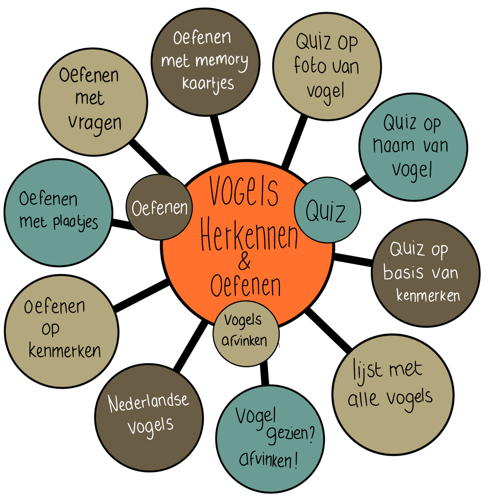
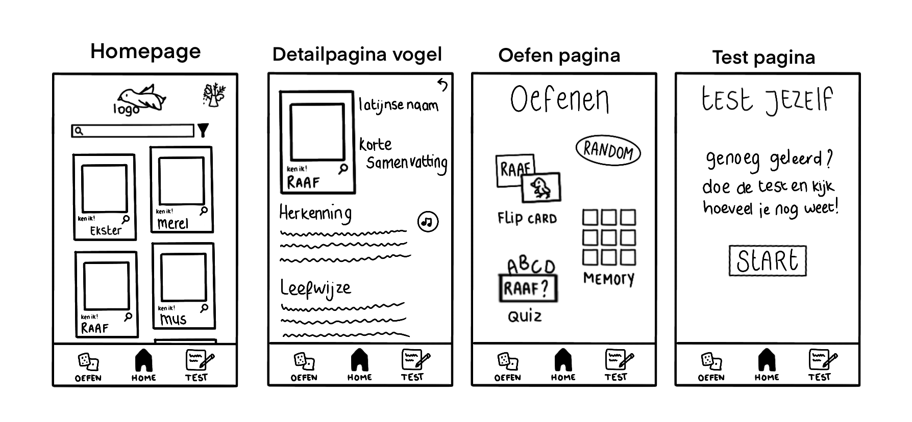
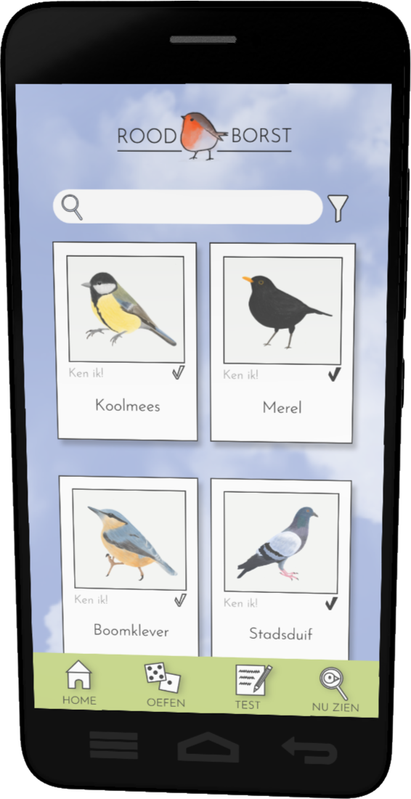

Projecten
Project: Vogel Platform
Focus: Vormgeving en Content maken
Voor dit project moest ik met mijn projectgroep een product of dienst maken vanuit onze passie. Dit concept moesten wij ontwerpen voor een bepaald persoon die wij zelf mochten uitkiezen. Wij mochten dus alles maken wat we maar konden bedenken. Mijn aandeel in dit project is de vormgeving en de content.
Het proces
Onderzoek
Een van mijn teamgenoten kwam met het idee om een app te ontwikkelen voor haar zusje, Ingeborg. Haar zusje had biologie gestudeerd en moest nu voor haar baan vogels kunnen herkennen. Het doel was dus om een app te ontwikkelen waarmee ze kon oefenen met het herkennen van vogelsoorten. Mijn verantwoordelijkheid was de vormgeving. Verder heb ik ook het logo gemaakt. Mijn andere teamgenoten hebben de illustraties van de vogels gemaakt en het geheel gecodeerd.
Waar liep ik tegen aan?
In het begin vond ik het best lastig omdat ik erg veel ideeën had. Ik was niet alleen verantwoordelijk voor de vormgeving, maar ook voor de content. Ik moest dus manieren verzinnen waarmee Ingeborg kon oefenen. Het doel hierin was dan ook om het zo leuk mogelijk te maken. Zo leer je immers het snelst. De opdracht was om leuke leermethodes te verzinnen, zodat ik daar een selectie uit kon maken.
Ook waren er wel knelpunten tijdens het bedenken van de vormgeving en de opzet van de applicatie. Zo waren mijn eerste iconen niet erg duidelijk. Ik heb dit getest bij een aantal mensen en die snapte in eerste instantie niet helemaal wat het betekende. Hier heb ik dus ook meerdere iteraties van gemaakt. Voor het kleurschema had ik ook meerdere paletten gemaakt. Ook hier zal ik de volgende keer kritischer in moeten zijn. Ik had te veel keuzes, waardoor het best lastig werd. Uiteindelijk hebben wij gestemd en werd (toevallig ook mijn favoriet) gekozen.
Hoe heb ik dit opgelost?
Uiteindelijk heb ik alle ideeën op papier gezet. Toen ben ik ook meteen gaan schetsen, om mijn ideeën iets duidelijker te maken voor de rest van mijn groep. Hierdoor kon ik dus ook beter gaan kiezen welke functies de applicatie zou gaan krijgen. Met het kleurschema heb ik uiteindelijk toch de 3 beste paletten uitgekozen. Vervolgens heb ik dit nogmaals aan mijn teamgenoten laten zien. Nu vonden ze het wel makkelijker om een keuze te maken. Deze kleurpaletten had ik meteen in de homepage verwerkt. Zo kon mijn team ook meteen zien hoe dit er dan uiteindelijk uit zou komen te zien.
Wat neem ik mee naar een volgend project?
Zet je ideeën op een rij. Dat maakt alles veel makkelijker. Ook zal ik in het vervolg niet te perfectionistisch zijn tijdens het schetsen. Het is hier totaal niet van belang dat het perfect is. Vaak is het voor een ander juist wel erg duidelijk, terwijl je zelf alleen de oneffenheden ziet. Ook is het van belang dat ik de volgende keer voor mijzelf al selecties maak van belangrijke onderdelen. Zo is het voor de rest van het team niet te veel informatie om op te nemen en kan je gerichter onderzoeken wat de beste opties zijn.
Wat vond ik van dit project?
Een erg interessant project, omdat wij dus echt mochten doen wat wij leuk vonden (of beter in wilde worden). Ik heb ook het idee dat ik weer veel meer nieuwe inzichten heb gekregen. Voor de volgende keer heb ik een beter inzicht in hoe ik een project kan starten en hoe ik zoveel mogelijk ideeën kan vinden.
